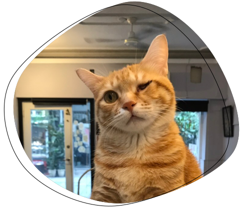
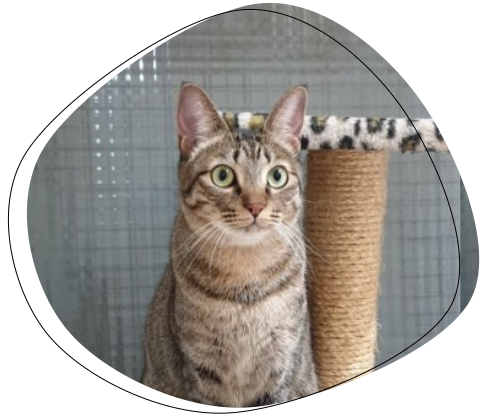
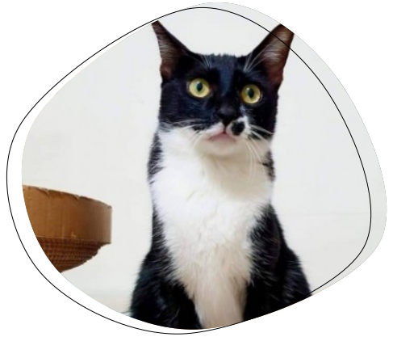
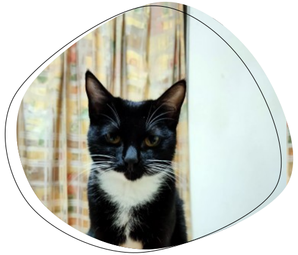

Nana
Nana今年二歲，是個大男孩，伙食良好、住宿舒適的最好代表。 很愛撒嬌，喜歡引人注意，常常在有人來的時候，喵喵兩聲， 訪客注意到這個肥肥短短的可愛貓貓以後，牠又會走掉，當作什麼事都沒發生。
看更多

Kido
右眼失去眼睛的Jasmine，完全沒有因為失去視力而感到沮喪， 他非常的活潑，愛講話，也是個破壞狂，宿舍的門，被破壞了無數次。
看更多

Grace
Grace今年二歲，是個大男孩，伙食良好、住宿舒適的最好代表。 很愛撒嬌，喜歡引人注意，常常在有人來的時候，喵喵兩聲， 訪客注意到這個肥肥短短的可愛貓貓以後，牠又會走掉，當作什麼事都沒發生。
看更多

Mark
右眼失去眼睛的Mark，完全沒有因為失去視力而感到沮喪， 他非常的活潑，愛講話，也是個破壞狂，宿舍的門，被破壞了無數次。
看更多

Sam
Sam今年二歲，是個大男孩，伙食良好、住宿舒適的最好代表。 很愛撒嬌，喜歡引人注意，常常在有人來的時候，喵喵兩聲， 訪客注意到這個肥肥短短的可愛貓貓以後，牠又會走掉，當作什麼事都沒發生。
看更多